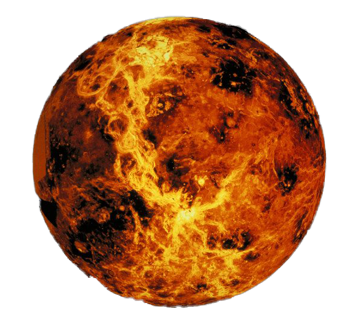
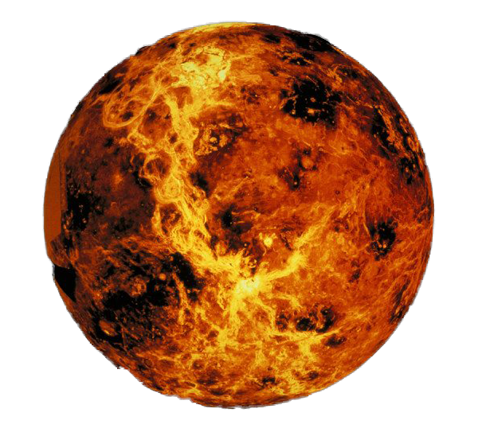
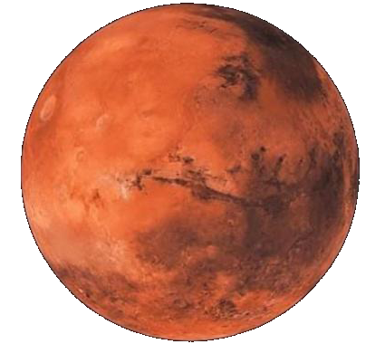
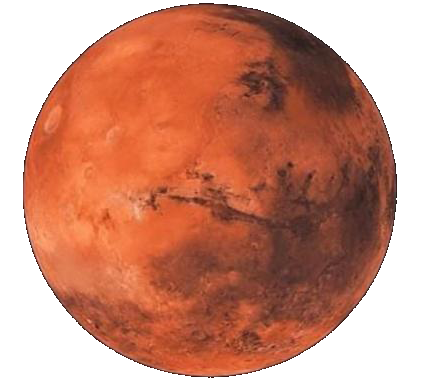

 


Logically, the closest planets to the
sun are naturally going to be hotter,
and the farthest planets are going to
be colder but this logic isn't exactly
correct. You see, even though mercury
is the closest planet to the sun, it
doesn't have an atmosphere, so it cannot
retain as much heat as Venus can. Venus
is actually considered the hottest planet
in our solar system